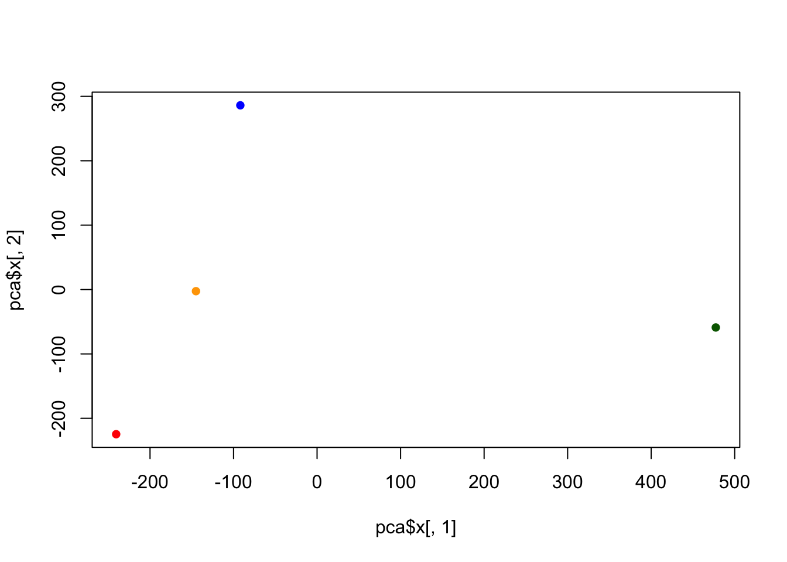

x <- rnorm(10000, mean=3)
hist(x)Class 7
Clustering we will start today’s lab with clustering methods, in particular so-called K-means. The main function for this in R is kmeans() Let’s try it on some made up data where we know that what the answer should be.
tmp <- c(rnorm(30, mean=3), rnorm(30,mean=-3))
x <- cbind(x=tmp, y=rev(tmp))
x x y
[1,] 1.5730617 -3.7374268
[2,] 2.0059203 -2.7983824
[3,] 4.8776676 -3.6285281
[4,] 2.3305371 -4.5500263
[5,] 3.3872891 -4.1880801
[6,] 2.4381875 -3.4417533
[7,] 3.1238067 -2.9183922
[8,] 5.0561355 -2.7236296
[9,] 3.3918173 -2.8282738
[10,] 3.0228338 -4.3334883
[11,] 2.5655748 -2.5006622
[12,] 3.6298575 -2.6619461
[13,] 2.5880133 -4.4307532
[14,] 4.2711998 -1.6431886
[15,] 2.6769813 -2.5530005
[16,] 3.4084627 -0.7565067
[17,] 3.6684502 -3.3627415
[18,] 1.3894406 -3.0703916
[19,] 2.4567153 -3.5570015
[20,] 2.4196013 -2.2999740
[21,] 4.8162607 -4.5744524
[22,] 3.2417289 -3.4015945
[23,] 1.8513929 -1.8763947
[24,] 2.1305445 -2.5276290
[25,] 4.5969326 -2.8761861
[26,] 3.3170021 -3.3040674
[27,] 3.2194570 -4.1922045
[28,] 2.8989878 -2.7332841
[29,] 4.2126782 -4.3076060
[30,] 2.8085571 -0.9398339
[31,] -0.9398339 2.8085571
[32,] -4.3076060 4.2126782
[33,] -2.7332841 2.8989878
[34,] -4.1922045 3.2194570
[35,] -3.3040674 3.3170021
[36,] -2.8761861 4.5969326
[37,] -2.5276290 2.1305445
[38,] -1.8763947 1.8513929
[39,] -3.4015945 3.2417289
[40,] -4.5744524 4.8162607
[41,] -2.2999740 2.4196013
[42,] -3.5570015 2.4567153
[43,] -3.0703916 1.3894406
[44,] -3.3627415 3.6684502
[45,] -0.7565067 3.4084627
[46,] -2.5530005 2.6769813
[47,] -1.6431886 4.2711998
[48,] -4.4307532 2.5880133
[49,] -2.6619461 3.6298575
[50,] -2.5006622 2.5655748
[51,] -4.3334883 3.0228338
[52,] -2.8282738 3.3918173
[53,] -2.7236296 5.0561355
[54,] -2.9183922 3.1238067
[55,] -3.4417533 2.4381875
[56,] -4.1880801 3.3872891
[57,] -4.5500263 2.3305371
[58,] -3.6285281 4.8776676
[59,] -2.7983824 2.0059203
[60,] -3.7374268 1.5730617We can pass this to the base R plot() function for a quick plot
plot(x)k <- kmeans(x, centers=2, nstart=20)
kK-means clustering with 2 clusters of sizes 30, 30
Cluster means:
x y
1 3.112503 -3.090580
2 -3.090580 3.112503
Clustering vector:
[1] 1 1 1 1 1 1 1 1 1 1 1 1 1 1 1 1 1 1 1 1 1 1 1 1 1 1 1 1 1 1 2 2 2 2 2 2 2 2
[39] 2 2 2 2 2 2 2 2 2 2 2 2 2 2 2 2 2 2 2 2 2 2
Within cluster sum of squares by cluster:
[1] 56.18001 56.18001
(between_SS / total_SS = 91.1 %)
Available components:
[1] "cluster" "centers" "totss" "withinss" "tot.withinss"
[6] "betweenss" "size" "iter" "ifault" k$size[1] 30 30k$cluster [1] 1 1 1 1 1 1 1 1 1 1 1 1 1 1 1 1 1 1 1 1 1 1 1 1 1 1 1 1 1 1 2 2 2 2 2 2 2 2
[39] 2 2 2 2 2 2 2 2 2 2 2 2 2 2 2 2 2 2 2 2 2 2k$centers x y
1 3.112503 -3.090580
2 -3.090580 3.112503Now we got to the main results let’s use them to plot our data with the kmeans result.
plot(x, col=k$cluster)Q4.Plot x colored by the kmeans cluster assignment and add cluster centers as blue points
plot(x, col=k$cluster, pch=16)Q5. Cluster the data again with kmeans() into 4 groups and plot the results.
k4 <- kmeans(x, center= 4, nstart=20)
plot(x, col=k4$cluster, pch=16)K-means is very popular mostly because it is fast and relatively straight forward to run and understand. It has a big limitation in that you need to tell it how many groups (k, or centers) you want. #Hierarchical clustering The main function in base R is called ‘hclust()’. You have to pass it in a “distance matrix” not just your input data. you can generate a distance matrix with the “dist()”
hc <- hclust( dist(x))
hc
Call:
hclust(d = dist(x))
Cluster method : complete
Distance : euclidean
Number of objects: 60 Q6. Plot our hclust results.
plot(hc)To find the cluster(cluster membership vector)from a ‘hclust()’ result we can “cut” the tree at a certain height
plot(hc)
abline(h=8,col="red")grps <- cutree(hc, h=8)
table(grps)grps
1 2
30 30 Principal Component Analysis PCA of UK food data Read data showing the consumption in grams (per person, per week) of 17 different types of food-stuff measured and averaged in the four countries of the United kingdom. Let’s see how PCA can help us but first we can try conventional analysis.
url <- "https://tinyurl.com/UK-foods"
x <- read.csv(url)
x X England Wales Scotland N.Ireland
1 Cheese 105 103 103 66
2 Carcass_meat 245 227 242 267
3 Other_meat 685 803 750 586
4 Fish 147 160 122 93
5 Fats_and_oils 193 235 184 209
6 Sugars 156 175 147 139
7 Fresh_potatoes 720 874 566 1033
8 Fresh_Veg 253 265 171 143
9 Other_Veg 488 570 418 355
10 Processed_potatoes 198 203 220 187
11 Processed_Veg 360 365 337 334
12 Fresh_fruit 1102 1137 957 674
13 Cereals 1472 1582 1462 1494
14 Beverages 57 73 53 47
15 Soft_drinks 1374 1256 1572 1506
16 Alcoholic_drinks 375 475 458 135
17 Confectionery 54 64 62 41url <- "https://tinyurl.com/UK-foods"
x <- read.csv(url)
rownames(x) <- x[ ,1]
x <-x[, -1]
head(x) England Wales Scotland N.Ireland
Cheese 105 103 103 66
Carcass_meat 245 227 242 267
Other_meat 685 803 750 586
Fish 147 160 122 93
Fats_and_oils 193 235 184 209
Sugars 156 175 147 139Q1.How many rows and columns are in your new data frame named x? What R functions could you use to answer this questions? dim() give both rows and coloumns, there are 17 rows and 4 columns.
## Complete the following code to find out how many rows and columns are in x?
dim(x)[1] 17 4x <- read.csv(url, row.names=1)
head(x) England Wales Scotland N.Ireland
Cheese 105 103 103 66
Carcass_meat 245 227 242 267
Other_meat 685 803 750 586
Fish 147 160 122 93
Fats_and_oils 193 235 184 209
Sugars 156 175 147 139dim(x)[1] 17 4Q2. Which approach to solving the ‘row-names problem’ mentioned above do you prefer and why? Is one approach more robust than another under certain circumstances? Everytime run x <- x[,-1] the first row is gone. I would prefer x <- read.csv(url, row.names=1)
barplot(as.matrix(x), beside=T, col=rainbow(nrow(x)))
Q3: Changing what optional argument in the above barplot() function results in the following plot? Change beside to False.
barplot(as.matrix(x), beside=FALSE, col=rainbow(nrow(x)))
Q5: Generating all pairwise plots may help somewhat. Can you make sense of the following code and resulting figure? What does it mean if a given point lies on the diagonal for a given plot? Each row and column of the matrix corresponds to a dataset, which seems to be named after regions/countries: England, Wales, Scotland, and N.Ireland.
The points in the scatterplots are colored using the rainbow function with 10 different colors, as indicated in the provided code. This means that there are likely 10 different categories or groups in the dataset, possibly representing time points, groups, or other categorizations.
The pairwise scatterplots provide insights into how the datasets relate to each other. For example, if these datasets represent yearly measurements of a specific parameter (like GDP or population) for the four regions, then a point lying on the diagonal in the scatterplot comparing “England” and “Wales” would mean that in that specific year, both England and Wales had the same measurement value.
pairs(x, col=rainbow(10), pch=16)
Principal Component Analysis(PCA) PCA can help us make sense of these types of datasets. Let’s see how it works. The main function in “base” R is called ‘prcomp()’. In this case we want to first take the teanspose of our input ‘x’ so the columns are the food types and the countries are the rows.
head( t(x) ) Cheese Carcass_meat Other_meat Fish Fats_and_oils Sugars
England 105 245 685 147 193 156
Wales 103 227 803 160 235 175
Scotland 103 242 750 122 184 147
N.Ireland 66 267 586 93 209 139
Fresh_potatoes Fresh_Veg Other_Veg Processed_potatoes
England 720 253 488 198
Wales 874 265 570 203
Scotland 566 171 418 220
N.Ireland 1033 143 355 187
Processed_Veg Fresh_fruit Cereals Beverages Soft_drinks
England 360 1102 1472 57 1374
Wales 365 1137 1582 73 1256
Scotland 337 957 1462 53 1572
N.Ireland 334 674 1494 47 1506
Alcoholic_drinks Confectionery
England 375 54
Wales 475 64
Scotland 458 62
N.Ireland 135 41pca <- prcomp( t(x) )
summary(pca)Importance of components:
PC1 PC2 PC3 PC4
Standard deviation 324.1502 212.7478 73.87622 3.176e-14
Proportion of Variance 0.6744 0.2905 0.03503 0.000e+00
Cumulative Proportion 0.6744 0.9650 1.00000 1.000e+00pca$x PC1 PC2 PC3 PC4
England -144.99315 -2.532999 105.768945 -4.894696e-14
Wales -240.52915 -224.646925 -56.475555 5.700024e-13
Scotland -91.86934 286.081786 -44.415495 -7.460785e-13
N.Ireland 477.39164 -58.901862 -4.877895 2.321303e-13plot( pca$x[,1], pca$x[,2], col=c("orange", "red", "blue", "darkgreen"),pch=16)
The “loadings” tells us how much the origional variables (in our case the foods) contribute to the new variables i.e. the PCs.
## Lets focus on PC1 as it accounts for > 90% of variance
par(mar=c(10, 3, 0.35, 0))
barplot( pca$rotation[,1], las=2 )
pca$rotation PC1 PC2 PC3 PC4
Cheese -0.056955380 0.016012850 0.02394295 -0.694538519
Carcass_meat 0.047927628 0.013915823 0.06367111 0.489884628
Other_meat -0.258916658 -0.015331138 -0.55384854 0.279023718
Fish -0.084414983 -0.050754947 0.03906481 -0.008483145
Fats_and_oils -0.005193623 -0.095388656 -0.12522257 0.076097502
Sugars -0.037620983 -0.043021699 -0.03605745 0.034101334
Fresh_potatoes 0.401402060 -0.715017078 -0.20668248 -0.090972715
Fresh_Veg -0.151849942 -0.144900268 0.21382237 -0.039901917
Other_Veg -0.243593729 -0.225450923 -0.05332841 0.016719075
Processed_potatoes -0.026886233 0.042850761 -0.07364902 0.030125166
Processed_Veg -0.036488269 -0.045451802 0.05289191 -0.013969507
Fresh_fruit -0.632640898 -0.177740743 0.40012865 0.184072217
Cereals -0.047702858 -0.212599678 -0.35884921 0.191926714
Beverages -0.026187756 -0.030560542 -0.04135860 0.004831876
Soft_drinks 0.232244140 0.555124311 -0.16942648 0.103508492
Alcoholic_drinks -0.463968168 0.113536523 -0.49858320 -0.316290619
Confectionery -0.029650201 0.005949921 -0.05232164 0.001847469# The inbuilt biplot() can be useful for small datasets
biplot(pca)